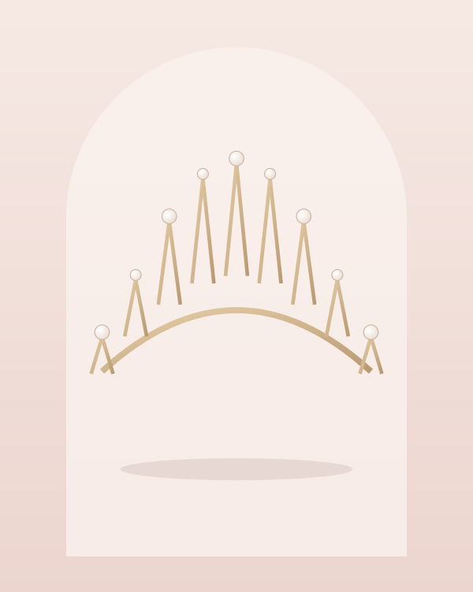
Диадема «Звёздная нить»
Тонкая диадема с кристаллами и жемчужинами. Выглядит нежно и не перегружает причёску.
от 6 500 ₽
Нижний Новгород · свадебный салон & ателье
Диадемы, фата, серьги, колье и гребни, которые подчеркнут платье и завершат образ. Подбираем украшения на примерке — вместе с платьем, чтобы увидеть всё сразу.
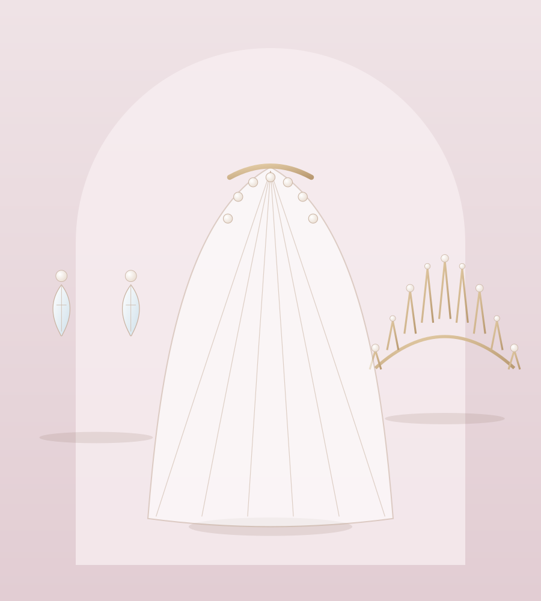
Украшения выполнены из ювелирного сплава с родиевым и золотым покрытием, жемчуга и кристаллов. Многие из них можно примерить вместе с платьем.

Тонкая диадема с кристаллами и жемчужинами. Выглядит нежно и не перегружает причёску.
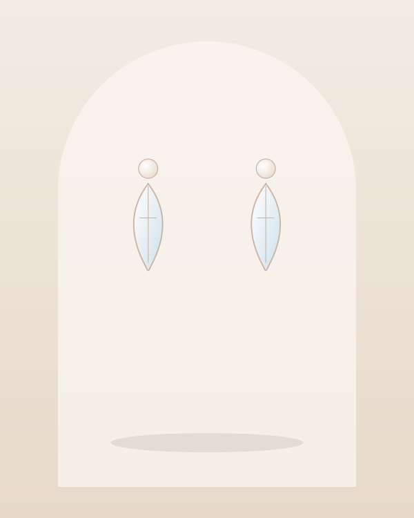
Длинные серьги-подвески, которые красиво смотрятся при открытой шее и высокой причёске.
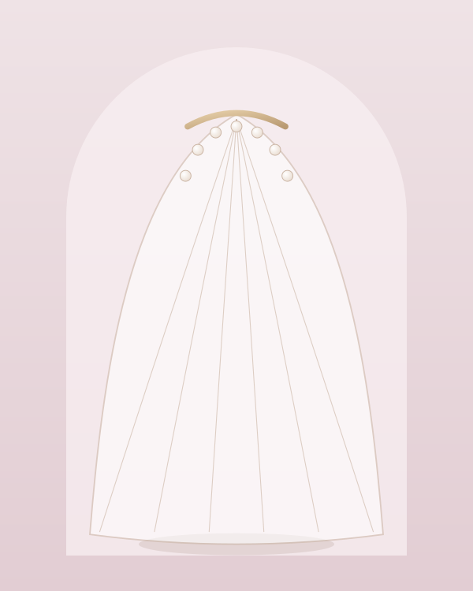
Мягкий фатин длиной до пола. Лёгкая, не сковывает движения и снимается за секунду.
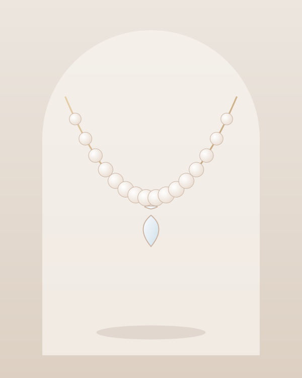
Жемчужная нить с подвеской-каплей. Подходит к платьям с закрытым или круглым вырезом.
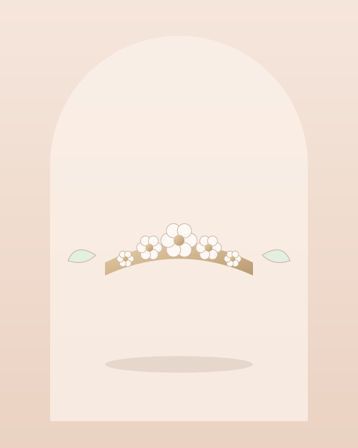
Лёгкая заколка для причёски с керамическими цветами. Хорошо держится в волосах.
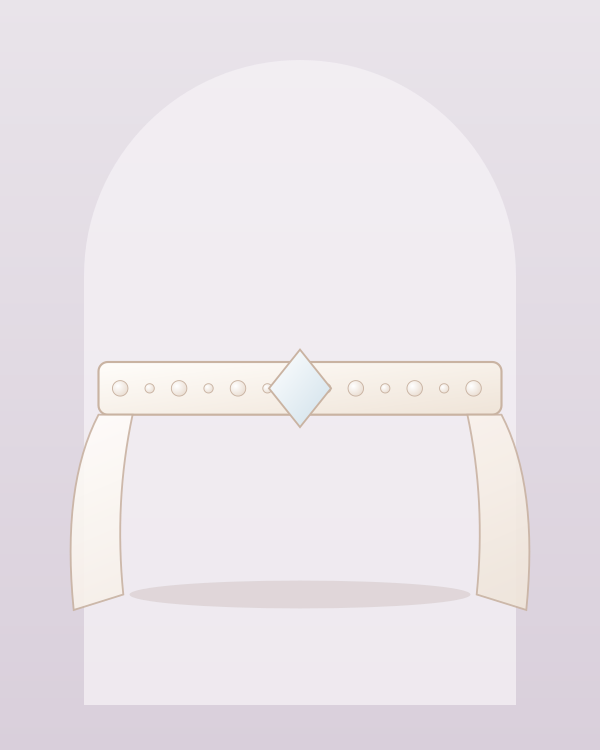
Пояс-лента с бисером и кристаллами. Акцентирует талию и оживляет минималистичное платье.
Цены указаны ориентировочно; точная стоимость и наличие — в салоне.
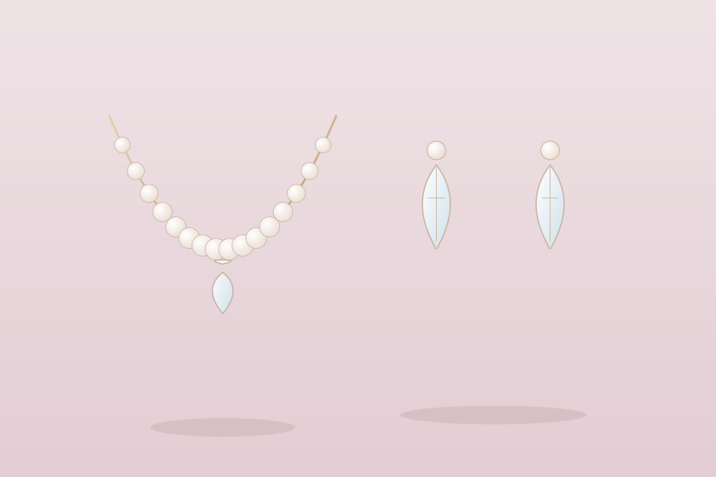
К платью с глубоким V-вырезом подойдёт колье-подвеска или серьги, а при открытых плечах колье лучше убрать — достаточно выразительных серёжек. Закрытый ворот прекрасно «дружит» с длинными серьгами и украшением в причёске.
Главное правило — один акцент. Если в платье много кружева, украшения должны быть сдержаннее.
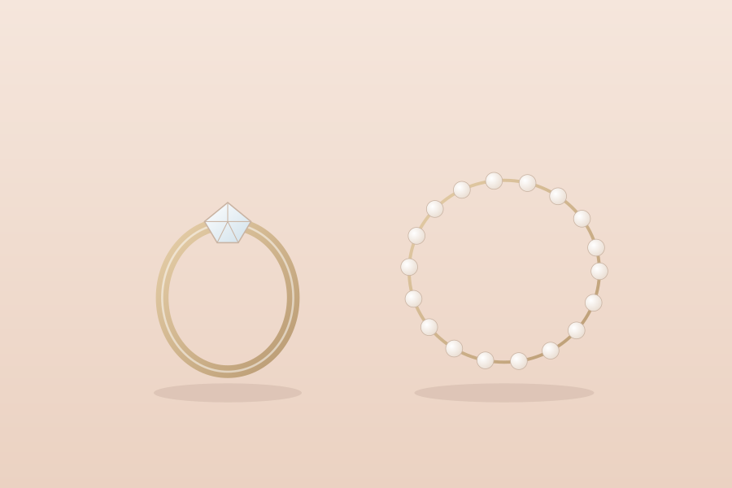
Тёплый айвори хорошо сочетается с золотом и шампанским, а холодный белый — с серебром и родием. Розовое золото подчёркивает пудровые оттенки в образе.
Фианиты и кристаллы придают блеск, жемчуг — мягкость и нежность. Нам важно, чтобы украшения были лёгкими и не раздражали кожу в течение дня.
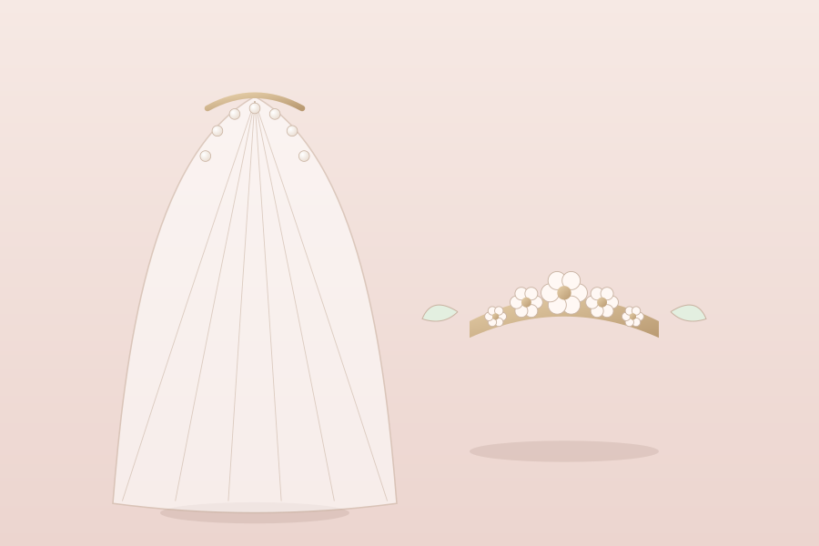
Короткая фата до плеч подходит для росписи и небольших церемоний, фата до пола добавляет торжественности, а соборная фата с длинным шлейфом создаёт эффект кино. Выбирая длину, учитывайте силуэт платья и формат праздника.
Мы подберём фату под фасон и крепление к причёске и покажем, как её правильно надевать и снимать.
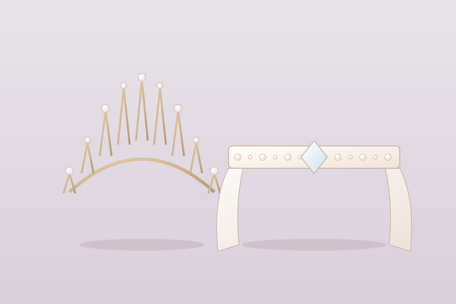
На примерке платья мы сразу предлагаем аксессуары: вы видите себя в готовом образе, а не угадываете по отдельным деталям. Можно прийти со своими украшениями — подскажем, подходят ли они к платью.
Если вы ещё не выбрали платье, начните со страницы свадебных платьев.
Определитесь с фасоном и вырезом — от них зависят украшения.
Предложим 3–5 вариантов диадем, серёг и фаты к вашему платью.
Согласуем длину, металл и крепление с вашим стилистом.
Упакуем в футляры и расскажем, как хранить украшения.
Да. Приходите на примерку в своём платье или принесите фото и описание ткани — мы предложим подходящие аксессуары.
Достаточно серёг и украшения для причёски. Колье в этом случае визуально «перегружает» зону декольте и мешает платью.
Да, мы шьём фату любой длины и ширины из фатина разной плотности, при желании с кружевной отделкой по краю. Сроки — от 5 дней.
В салоне есть недорогие сеты для подружек и мам: серьги, заколки, браслеты. Подберём их в тон образу невесты.
Держите в закрытом футляре, отдельно от других изделий. Перед ношением протрите мягкой сухой салфеткой, а духи и лак используйте до того, как наденете украшения.
Оставьте телефон — мы перезвоним в течение дня и подберём удобное время.